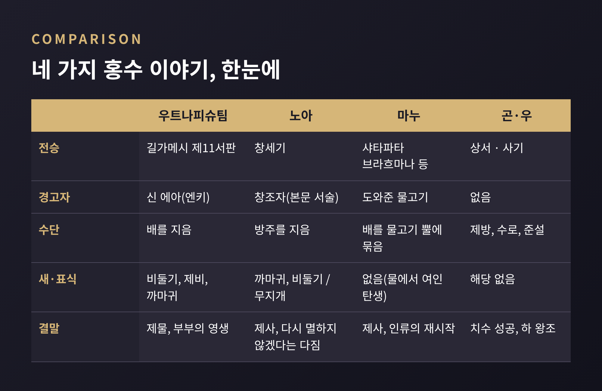
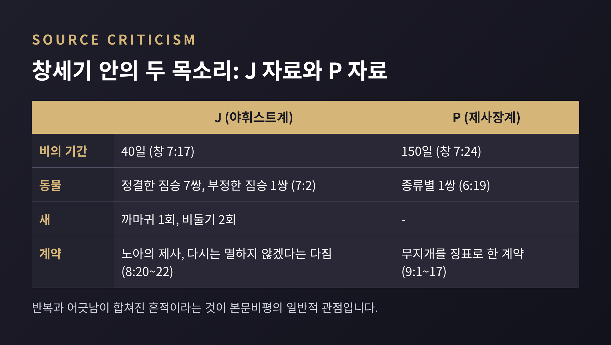
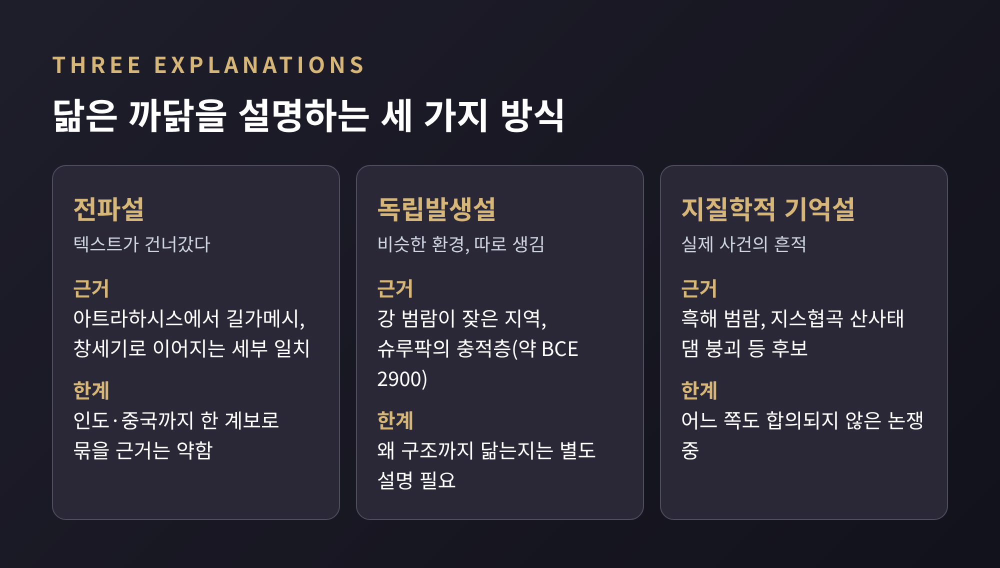
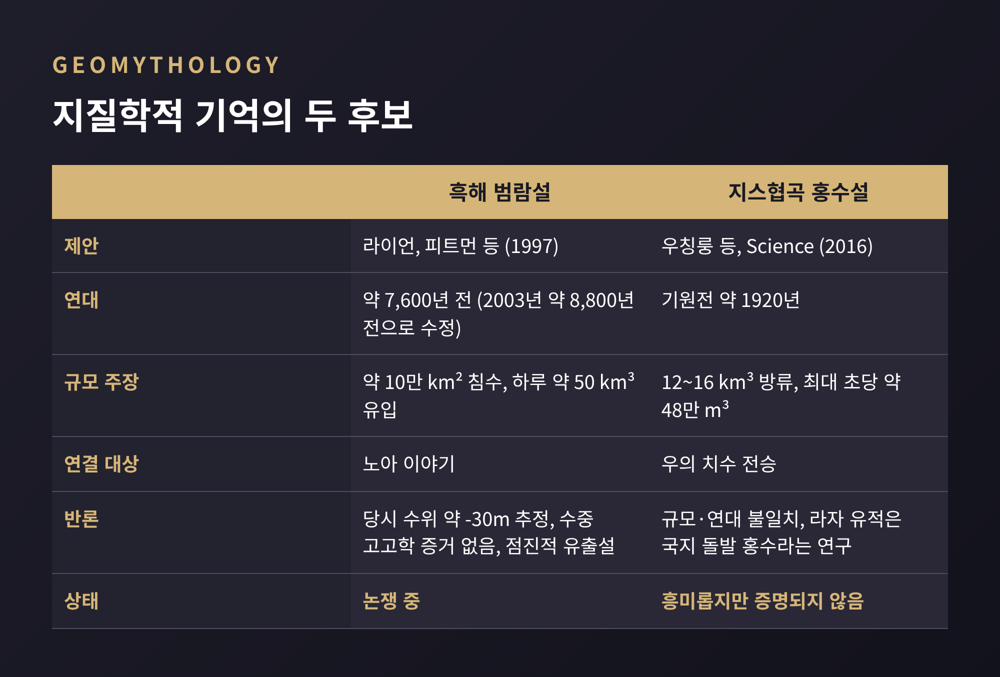

이번 글에서는 세계 곳곳에 퍼진 대홍수 설화를 비교종교학의 눈으로 정리해 보겠습니다. 메소포타미아의 우트나피슈팀, 창세기의 노아, 인도의 마누는 "경고, 배, 생존자"라는 뼈대를 공유합니다. 중국의 곤과 우는 배를 타지 않고 물길을 다스립니다. 학계는 이 닮음과 다름을 전파, 독립 발생, 지질학적 기억이라는 세 갈래로 설명해 왔습니다.
이 글은 어느 신앙의 진리 여부를 따지지 않습니다. 텍스트와 학계의 논의만 놓고 살펴봅니다.

표로 먼저 보시면 편합니다. 앞의 세 이야기는 구조가 비슷하고, 마지막 하나는 방향이 다릅니다. 아래에서 하나씩 풀어 보겠습니다.
가장 오래된 신의 홍수 서사는 수메르 메소포타미아에서 나왔습니다. 아카드어 『아트라하시스』는 기원전 18세기 판본이 알려져 있습니다. 연대가 명기된 가장 오래된 사본은 암미사두카 왕(기원전 1646~1626) 시대의 것입니다.
이 서사에서 신들이 홍수를 일으킨 이유가 흥미롭습니다. 인류가 불어나 그 소음이 신들을 방해했다는 것입니다. 엔릴은 먼저 역병을 보내고, 폭풍과 가뭄을 보냈으며, 끝내 홍수를 결정했습니다. 물의 신 엔키는 "인간에게 말하지 않겠다"고 맹세했지만, 갈대 오두막의 벽에 대고 말하는 방식으로 맹세를 비껴가 사제 아트라하시스에게 배를 지으라 일러 줍니다.
『길가메시 서사시』 제11서판의 우트나피슈팀은 같은 계열의 인물입니다. 신 에아(엔키)의 지시로 배를 짓고, 폭풍은 "엿새 낮 이레 밤" 이어집니다. 이레째 날 비둘기를 놓으니 돌아왔고, 제비도 돌아왔으며, 까마귀는 돌아오지 않았습니다. 배가 니시르 산에 닿은 뒤 제물을 바치자 신들이 "파리처럼" 제물 주위로 몰려들었다고 합니다. 엔릴은 처음엔 분노했으나 결국 우트나피슈팀 부부에게 신과 같은 영생을 줍니다.
이 이야기가 세상에 알려진 계기도 극적입니다. 대영박물관의 조지 스미스가 니네베에서 나온 점토판(K.3375)을 1872년 번역해 발표했습니다. 이듬해인 1873년 5월 7일에는 후속 발굴에서 빠져 있던 조각까지 찾아냈습니다.
한 가지 짚어 둘 점이 있습니다. 길가메시의 홍수 대목은 처음부터 서사시에 있던 것이 아닐 수 있습니다. 아트라하시스에서 빌려 와 편입했다는 견해가 널리 받아들여집니다. 현재의 표준판은 신-레키-운닌니가 기원전 1300~1000년 사이에 편집한 것으로 알려져 있고, 일부 학자는 더 오래된 아카드어 길가메시 서판에는 홍수 이야기가 없었다고 봅니다.
성서학계의 일반적 관점에서 창세기 홍수 이야기는 제사장계(P) 자료와 야휘스트계(J) 자료가 합쳐진 글입니다. 근거는 본문 안의 반복과 어긋남입니다.

연대는 학자마다 다릅니다. 메소포타미아 홍수 신화는 구바빌로니아 시대(약 기원전 1880~1595)에 자리를 잡았고, 창세기는 대략 기원전 5세기경 편찬된 것으로 추정됩니다. 일부는 창세기 1~11장을 기원전 3세기까지 늦춰 봅니다. 아트라하시스가 창세기보다 천 년쯤 앞선다는 서술도 있습니다. 추정 폭이 크다는 점은 기억해 두실 만합니다.
이 때문에 많은 학자는 창세기 이야기가 메소포타미아 전승을 각색한 것이라고 봅니다. 특히 길가메시와의 일치가 크다고 합니다. 비둘기를 날리는 대목에 가까운 우가리트 텍스트(RS 94.2953)도 있어서, 전승이 한 갈래만은 아니었음을 짐작하게 합니다. 영웅 이름이 우트나피슈팀의 약칭에서 노아가 되었다는 제안도 있습니다만, 이는 하나의 가설일 뿐입니다.
차이도 분명합니다. 아트라하시스의 신들은 서로 다투는 무리이고, 창세기는 하나의 창조자를 전제합니다. 홍수의 이유도 다릅니다. 소음과 인구 과잉이 아니라 인간의 타락에 대한 응답으로 서술됩니다. 『바빌로니아 홍수 이야기가 창세기에 대해 알려 주는 것과 알려 주지 못하는 것』이라는 1978년 BAR 글은 오히려 비교를 통해 창세기의 독자성이 드러난다는 관점을 보여 줍니다.
인도에서는 물고기가 경고합니다. 『샤타파타 브라흐마나』가 마츠야와 홍수를 언급한 가장 이른 현존 문헌으로 꼽힙니다. 이후 『마하바라타』와 『마츠야 푸라나』에도 변형되어 나옵니다.
마누가 예전에 도와준 물고기가 홍수를 미리 알립니다. 마누는 배를 짓고, 밧줄로 배를 물고기의 뿔에 묶어 홍수를 건넙니다. 마하바라타 판본에서는 일곱 성자와 씨앗을 싣고, 물고기는 브라흐마로 정체를 밝힙니다. 푸라나 판본에서는 비슈누의 화신 마츠야가 됩니다. 홍수 뒤 마누가 제사를 올리자 물에서 여인이 태어나 "마누의 딸"이 된다는 대목은 인류가 다시 시작된다는 의미입니다.
메소포타미아에서 물고기 신 에아가 왕에게 꿈으로 경고한다는 점과 겹쳐 보는 시각도 있습니다. 그러나 기원 논쟁은 열려 있습니다. 인도-아리아 이주나 인더스 문명과의 교역을 통해 전해졌다는 설이 있고, 인더스 지역이나 남인도 드라비다 계통에서 현지 발생했다는 설도 있습니다. 노르베르트 외팅거는 인도 홍수 신화의 원래 주인공이 마누가 아닌 야마였다고 주장합니다. 샤타파타 브라흐마나의 정확한 연대는 제가 확인한 자료에서 제시되지 않았습니다.
중국의 이야기는 방향이 다릅니다. 『상서』와 『사기』는 황하의 큰 홍수를 곤이 다스리지 못했고, 아들 우가 성공했으며, 이후 하(夏) 왕조가 이어졌다고 전합니다.
곤은 요 임금 때 치수를 맡아 9년 넘게 제방과 둑을 쌓았습니다. 스스로 불어나는 흙 '식양'을 썼다고 하지만 실패했습니다. 우는 실패 원인을 연구한 뒤 후직과 함께 물길을 터 수로로 돌리고 강바닥을 준설했습니다. 사업은 13년 걸렸고, 용문에 좁은 물길을 뚫어 '우문'이라 불리게 되었습니다. 세 번 집 앞을 지나고도 들어가지 않았다는 일화도 유명합니다. 아내가 산통을 겪을 때, 아들이 아버지를 부를 수 있게 되었을 때, 아들이 열 살을 넘겼을 때입니다.
여기서 눈에 띄는 대비가 있습니다. 앞의 세 이야기는 신이 일으킨 홍수에서 선택된 한 사람이 살아남는 구조이고, 우는 세계를 쓸어 낸 홍수에서 살아남은 사람이 아니라 물을 다스린 공학적 영웅입니다. 홍수는 인류를 심판하는 사건이 아니라 국가를 세우는 과제로 나타납니다.
역사성에 대해서는 신중해야 합니다. 우에 대한 동시대 증거는 없고, 이름이 처음 나오는 것은 서주 청동기로 전통 연대보다 약 천 년 뒤입니다. 상나라 갑골문에는 보이지 않습니다.

1) 전파설. 길가메시의 홍수 대목이 아트라하시스에서 왔고, 창세기가 메소포타미아 전승에 의존했다는 흐름입니다. 텍스트 사이의 세부 일치가 근거입니다. 다만 인도나 중국까지 하나의 계보로 묶을 만한 근거는 약하고, 인도 사례는 전래설과 자생설이 병존합니다.
2) 독립 발생설. 큰 강 옆에서 사는 사람들은 어디서든 홍수를 겪습니다. 메소포타미아의 슈루팍에서는 약 기원전 2900년의 충적층 60cm가 강의 물길 변경을 시사합니다. 홍수 신화는 유라시아와 아메리카에 널리 퍼져 있고, 대개 불복종한 원래 인류가 사라진 뒤 새 세계가 열리는 구조를 취합니다. 이집트에 홍수 신화가 드문 것은 홍수보다 가뭄이 더 두려웠기 때문이라는 해석도 있습니다. 비슷한 이야기가 닮은 환경에서 따로 생겼다는 설명입니다.
3) 지질학적 기억설. 지오미톨로지(geomythology)는 구전을 지진, 화산, 홍수 같은 자연 사건과 연결하는 분야입니다. 대표 사례가 두 가지입니다.

첫째는 흑해 범람설입니다. 라이언과 피트먼 등이 1997년 제안했습니다. 지중해 물이 보스포루스를 뚫고 흑해로 들어왔다는 것입니다. 처음엔 약 7,600년 전, 2003년에는 약 8,800년 전으로 수정되었습니다. 약 10만 km²가 잠겼고 하루 약 50 km³가 유입되었다는 주장입니다. 이 사건이 노아 이야기의 기억일 수 있다고 제안했습니다.
하지만 비판도 만만치 않습니다. 침수 전 흑해 수위는 가정과 달리 약 -30m에 그쳤을 수 있고, 그 경우 폭포식 급류는 없었을 수 있습니다. 2011년 연구는 수중 고고학 증거를 찾지 못했고, 2012년 와편모조류 연구도 파국적 홍수 증거를 찾지 못했습니다. 2022년 문헌 검토는 점진적 유출 쪽이 더 개연성 있다고 결론 지었습니다. 이 가설은 지금도 논쟁 중입니다.
둘째는 중국 황하의 지스협곡입니다. 2016년 Science에 우칭룽 연구진이 발표했습니다. 지진이 부른 산사태가 칭하이의 황하를 막았다는 것입니다. 댐은 길이 약 1,300m에 현재 수면 위 최대 240m였습니다. 6~9개월 뒤 무너지며 12~16 km³의 물이 쏟아졌고, 최대 유량은 초당 약 48만 m³로 현재의 500배 이상이라고 추정했습니다. 연대는 기원전 약 1920년입니다. 약 25km 하류의 라자 유적이 최대 38m 퇴적물에 묻혔다는 점이 근거였습니다. 이 사건이 우의 치수 전승의 바탕일 수 있다는 제안입니다.
반론도 있습니다. 홍수 규모가 전승과 맞지 않는다는 주장, 기원전 1920년이 전통적 하 왕조 연대보다 수 세기 늦다는 지적이 있습니다. 라자 유적 파괴는 홍수와 무관하다는 연구(2017)와 국지적 돌발 홍수·이류 때문이라는 연구(2017, 2021)도 나왔습니다. 사이언티픽 아메리칸의 평가는 "흥미롭지만 증명되지 않았다"입니다.
그 밖에도 해양 화석의 발견이 홍수 이야기에 영감을 주었다는 아드리엔 메이어의 제안, 페르시아만 해수면 상승, 데우칼리온 신화와 테라 화산 쓰나미를 잇는 견해가 있습니다. 모두 가설이며, 정답으로 합의된 것은 없습니다.
정리하면 이렇습니다. 텍스트 내부의 계보는 비교적 선명합니다. 아트라하시스에서 길가메시로, 그리고 창세기로 이어지는 선이 학계의 중심 견해입니다. 그 바깥의 인도와 중국은 전파인지 자생인지 아직 열려 있습니다. 지질학이 보태는 것은 "그럴 법한 후보"이지 확정된 답이 아닙니다.
하나 더 있습니다. 같은 홍수라도 사회가 던지는 질문이 다릅니다. 소음에 지친 신들, 타락한 인간, 은혜를 갚는 물고기, 치수에 평생을 건 임금입니다. 비교의 재미는 닮은 점보다 이 갈라지는 지점에 있다고 생각합니다.
"닮음은 하나의 원인으로 설명되지 않는다."
물이 빠진 뒤 각 문명이 어떤 이야기를 남겼는지 읽어 보시길 권합니다. 같은 물을 두고도 그토록 다른 이야기가 나왔다는 사실이 그 자체로 흥미로운 공부가 될 것입니다.